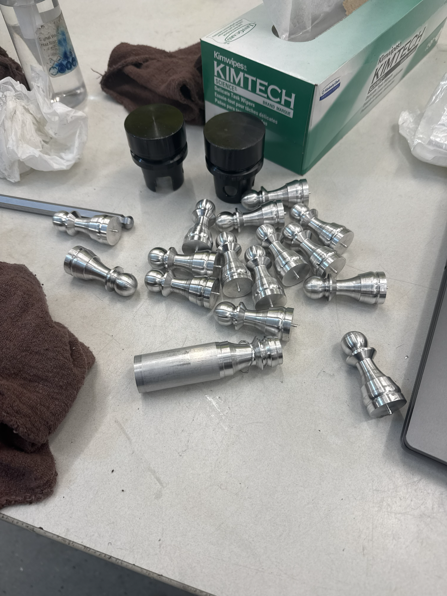
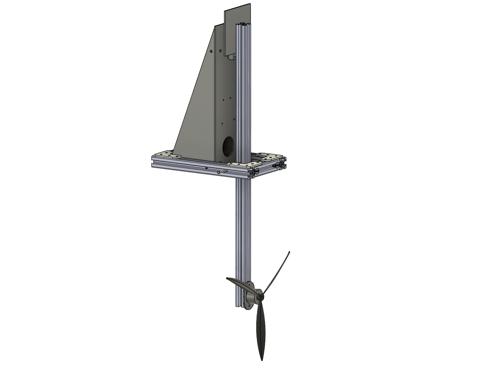
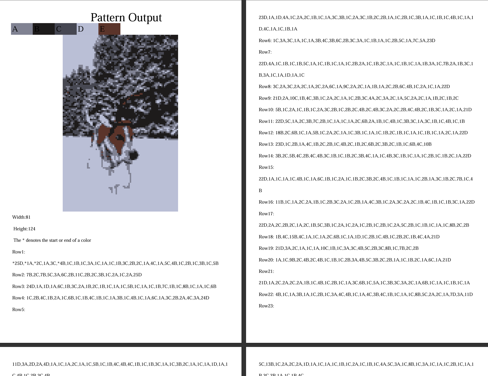

I enjoy projects that connect design, fabrication, analysis, and iteration. This page brings together the major engineering efforts that I highlighted on the home page, with room to expand each one as I continue building and learning.
CNC-Machined Chess Set

I’m machining a full chess set in the Bechtel Makerspace, producing aluminum pawns and rooks through CNC lathe operations and a second-op CNC mill setup. I generated all Fusion 360 CAM toolpaths myself, focusing on precision, repeatability, and clean surface finishes across each piece. Pictured is 15 and 1/2 pawns.
Pictured in rook after first lathe operation, before using CNC mill to finish the top part.
This project was my first major experience with complex CAM generation, and it has given me the confidence to take on more detailed machining work, refine my process, and approach fabrication with greater precision and independence.
Amphibious Drone

As project manager for Purdue’s Amphibious Drone VIP team this semester, I coordinate a six-person team across design, fabrication, testing, and integration. The project is still in progress, and my role has involved setting milestones, aligning subgroups, and keeping development moving toward a functional amphibious UAV. While CFD is a goal for the project, my direct hands-on experience has centered on team leadership, electronics integration, and embedded systems development for the test platform.
In addition to leading the team, I am responsible for the electronics and wiring of the experiment. Pictured is a system diagram showing how the components connect and communicate.
Here, I am assembling the electronics and programming the Arduino to verify that the system operates as intended before testing.
This ongoing project has strengthened my ability to manage technical work, communicate across disciplines, and keep a multi-person team organized while also contributing directly to the electrical and coding aspects of the build.
Tapestry Crochet Project

I built a Python program that converts any image into a simplified, stitch-accurate tapestry crochet pattern using K-means color clustering and custom interpolation methods. The tool generates a complete, human-readable PDF by automating color labeling, zig-zag row traversal, palette mapping, and pattern formatting.
From there I used a K-means algorithm to simplify into a specificed number of colors. Pictured here is 5 colors
Finally I created the Tapestry Crochet Pattern that could be used to create the image.
This project is a good example of how software, design, and craftsmanship can connect. It allowed me to turn an image into a physical, stitch-based pattern while exploring algorithmic design in a hands-on way.
4 x 8 Hobbyist CNC
I built and assembled a 4x8 CNC based on the Lowrider L3 design, machining the MDF struts using the partially completed machine itself. Along the way, I solved CAM and G-code issues, including correcting a zeroing error that caused the toolpath to plunge into the spoilboard.
The first successful cut completed on the fully assembled CNC machine.
Projects like this are where I learned how much engineering is about problem-solving under real constraints. From machine alignment to toolpath validation, each challenge forced me to build both technical knowledge and practical intuition. This was one of my first large-scale projects, and it was completed in my parents’ garage before I came to college.
Pepper's Ghost (ES@P)
This Pepper’s Ghost demo was a team project through ES@P, and I served on the mechanical team responsible for building the supporting frame. The video captures one of the first test runs after the frame was completed, when we were validating the system and refining the optical setup.